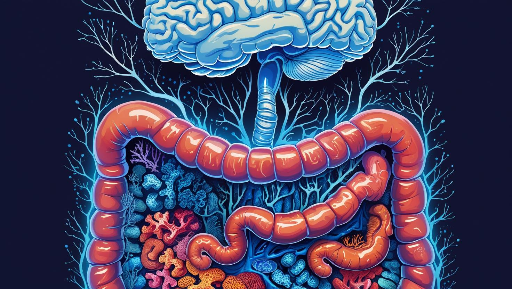
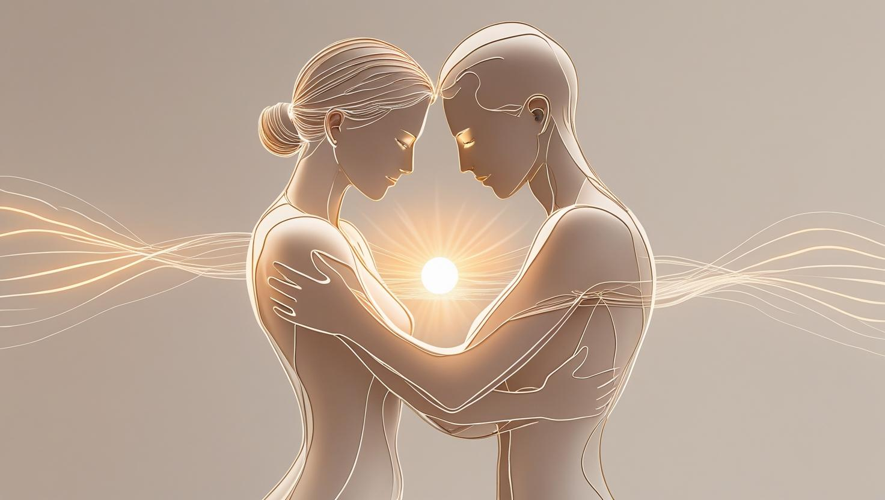
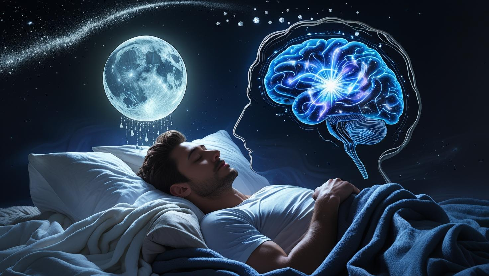

Te-ai simțit vreodată irascibil fără un motiv anume sau copleșit de o stare de nemulțumire, chiar și atunci când totul în viața ta pare să fie în regulă? Ai pofte de dulciuri și carbohidrați, iar somnul tău este agitat? Acestea nu sunt doar "zile proaste", ci pot fi semnale ale unui dezechilibru al serotoninei.
Dacă dopamina este motorul care ne împinge spre acțiune, serotonina este uleiul care asigură funcționarea lină a întregului sistem. Cunoscută chimic sub numele de 5-hidroxitriptamină (5-HT), serotonina este un neurotransmițător monoaminic, la fel ca dopamina, dar cu funcții profund diferite. Ea este sintetizată printr-un proces biochimic în doi pași din triptofan, un aminoacid esențial pe care corpul nostru nu îl poate produce și trebuie să îl obțină din alimentație. Enzima triptofan hidroxilază transformă triptofanul în 5-HTP, care este apoi convertit în serotonină. Acest proces complex depinde critic de prezența co-factorilor, precum vitamina B6 și magneziul, subliniind legătura directă dintre nutriție și starea de spirit.
O particularitate fiziologică fascinantă este distribuția sa în corp. Deși o asociem cu creierul, peste 90% din serotonina totală este produsă și stocată în celulele enterocromafine din peretele tractului gastrointestinal. Aici, în "al doilea creier", serotonina joacă un rol vital în reglarea motilității intestinale (peristaltism), a secrețiilor și a senzației de greață. Această producție masivă din intestin nu poate însă influența direct creierul, deoarece serotonina nu poate traversa bariera hemato-encefalică. Prin urmare, creierul trebuie să își sintetizeze propria rezervă de serotonină, folosind triptofanul care reușește să treacă această barieră. Această separare funcțională explică de ce problemele digestive sunt atât de frecvent asociate cu tulburările de dispoziție.
În sistemul nervos central, serotonina acționează ca un maestru dirijor, modulând activitatea altor neurotransmițători și influențând o gamă largă de funcții. Ea este implicată în reglarea anxietății, a fericirii, a memoriei, a somnului (fiind un precursor direct al melatoninei), a apetitului și chiar a temperaturii corpului. Diversitatea sa de acțiuni este posibilă datorită existenței a cel puțin 14 tipuri diferite de receptori de serotonină (ex: 5-HT1A, 5-HT2A etc.), fiecare având o distribuție și o funcție specifică în creier. Activarea unui tip de receptor poate promova calmul, în timp ce activarea altuia poate influența apetitul. Această complexitate explică de ce echilibrarea serotoninei este atât de importantă pentru o stare generală de bine.
Spre deosebire de vârfurile euforice ale dopaminei, serotonina oferă o stare de bine constantă, o fundație solidă pe care se construiește reziliența noastră emoțională. Când nivelul de serotonină este optim, ne simțim mai încrezători, mai calmi și mai capabili să facem față provocărilor vieții. Un dezechilibru este adesea asociat cu anxietate, stări depresive, iritabilitate și tulburări obsesiv-compulsive. Vestea bună este că, deși mecanismele sunt complexe, putem influența direct această mașinărie biochimică prin obiceiuri zilnice conștiente și accesibile.
Iată 8 pași practici pentru a-ți crește natural nivelul de serotonină:
Pasul 1: Caută lumina soarelui

Expunerea la lumina naturală, în special în prima parte a zilei, este unul dintre cei mai puternici stimulenți pentru producția de serotonină. Lumina soarelui care atinge retina trimite un semnal către creier pentru a crește nivelul acestui neurotransmițător. O plimbare de 15-20 de minute dimineața, fără ochelari de soare, poate avea un impact semnificativ asupra stării tale de spirit pentru întreaga zi. Acest efect este direct legat de intensitatea luminii, măsurată în lux. O zi însorită poate oferi peste 50.000 de lux, în timp ce un birou bine iluminat oferă doar 500. De aceea, lumina artificială nu poate înlocui beneficiile soarelui. Mai mult, expunerea la soare stimulează și producția de vitamina D, un alt factor esențial în reglarea dispoziției și sănătății mentale.
Consistența este cheia. Încearcă să faci din această expunere un ritual zilnic, indiferent de vreme. Chiar și într-o zi înnorată, lumina naturală de afară este de sute de ori mai puternică decât cea dintr-o încăpere. Această practică nu doar că îți îmbunătățește starea de spirit pe moment, dar ajută la setarea ceasului biologic intern, promovând un somn mai bun pe timpul nopții. Este o investiție mică de timp cu un randament uriaș pentru echilibrul tău neurochimic și starea generală de bine, fiind una dintre cele mai simple și eficiente metode de a-ți susține sănătatea mentală.
Pasul 2: Adoptă mișcarea ritmică

Exercițiile fizice, în special cele cu o componentă ritmică și repetitivă, sunt extrem de eficiente în creșterea serotoninei. Activități precum alergatul, mersul alert, înotul, ciclismul sau chiar dansul ajută la transportul triptofanului (aminoacidul precursor al serotoninei) către creier. Nu este nevoie de un efort epuizant; consecvența este mult mai importantă decât intensitatea. Mișcarea ritmică are un efect aproape meditativ, calmând sistemul nervos și permițând creierului să intre într-o stare de flux. Acest tip de exercițiu reduce competiția dintre triptofan și alți aminoacizi pentru a trece bariera hemato-encefalică, permițând unei cantități mai mari să ajungă acolo unde este nevoie pentru a produce serotonină. Chiar și 30 de minute de mișcare moderată, de 3-5 ori pe săptămână, pot face o diferență vizibilă.
Pentru a amplifica beneficiile, concentrează-te pe conexiunea minte-corp în timpul mișcării. Fii atent la senzația picioarelor care ating pământul, la ritmul respirației tale sau la muzica pe care o asculți. Această prezență conștientă transformă exercițiul fizic într-o formă de meditație activă, reducând ruminația mentală și anxietatea. Nu subestima puterea unei simple plimbări în natură; combinarea mișcării ritmice cu expunerea la lumina soarelui și la mediul natural creează un cocktail puternic de stimulare a serotoninei, având un efect cumulativ asupra stării tale de bine.
Pasul 3: Hrănește-te cu triptofan

Serotonina este sintetizată din triptofan, un aminoacid esențial pe care corpul nu îl poate produce singur, deci trebuie obținut din alimentație. Asigură-te că dieta ta include alimente bogate în triptofan, precum ouă, brânzeturi, carne de curcan, nuci, semințe, tofu și somon. Pentru o absorbție optimă, este crucial să consumi aceste alimente alături de o porție de carbohidrați complecși (orez brun, ovăz, quinoa). Carbohidrații stimulează eliberarea de insulină, care ajută la "curățarea" celorlalți aminoacizi din sânge, lăsând cale liberă pentru triptofan să ajungă la creier. De asemenea, nu uita de co-factorii importanți în acest proces de conversie, precum Vitamina B6, magneziul și zincul, pe care îi găsești în legumele cu frunze verzi și semințe.
Timing-ul meselor poate juca, de asemenea, un rol important. O masă bogată în proteine la prânz îți poate oferi triptofanul necesar, în timp ce o gustare mică, bogată în carbohidrați complecși (cum ar fi un măr sau un pumn de fructe de pădure) seara, poate facilita conversia acestuia în serotonină și, ulterior, în melatonină, pregătindu-te pentru un somn odihnitor. Evită dietele extrem de restrictive care elimină complet grupe de macronutrienți, deoarece acestea pot priva creierul de "cărămizile" esențiale pentru producția de neurotransmițători și pot afecta negativ starea de spirit pe termen lung.
Pasul 4: Ai grijă de "al doilea creier"
Aproximativ 90% din serotonina corpului este produsă în tractul gastrointestinal, motiv pentru care acesta este adesea numit "al doilea creier". Un microbiom intestinal sănătos este direct legat de o producție optimă de serotonină. Consumă alimente bogate în probiotice (iaurt, kefir, varză murată) și prebiotice (ceapă, usturoi, banane, sparanghel) pentru a susține bacteriile benefice. Inflamația cronică din intestin, cauzată de o dietă bogată în zahăr și alimente procesate, poate perturba producția de neurotransmițători și poate contribui la stări de anxietate. Așadar, o digestie sănătoasă nu înseamnă doar confort fizic, ci este o componentă fundamentală a unei stări de spirit echilibrate și a sănătății mentale generale.
Axa intestin-creier este o autostradă bidirecțională de comunicare. Stresul și emoțiile negative pot afecta negativ flora intestinală, la fel cum un intestin inflamat poate trimite semnale de stres către creier. Pentru a întări această legătură, pe lângă o dietă echilibrată, este important să mănânci într-o stare de calm, mestecând bine alimentele. Acest lucru ajută digestia și reduce stresul asupra sistemului gastrointestinal. Hidratarea corespunzătoare și consumul de fibre sunt, de asemenea, esențiale pentru menținerea unui tranzit regulat și a unui mediu intestinal sănătos, propice producției de serotonină.
Pasul 5: Practică recunoștința
Starea de spirit și chimia creierului formează o buclă de feedback. Gândurile negative pot reduce nivelul de serotonină, în timp ce gândurile pozitive îl pot crește. Practicarea recunoștinței este un exercițiu puternic de neuroplasticitate. În fiecare seară, notează trei lucruri specifice pentru care ești recunoscător în acea zi. Acest simplu act de a-ți aminti și a retrăi mental experiențe pozitive poate stimula eliberarea de serotonină și poate reconfigura creierul pentru o perspectivă mai optimistă. Nu este vorba de a ignora problemele, ci de a antrena în mod conștient creierul să observe și să aprecieze aspectele pozitive ale vieții, oricât de mici ar fi. Acest exercițiu contracarează tendința naturală a creierului de a se concentra pe negativ (negativity bias) și construiește o bază emoțională mai stabilă.
Pentru a face practica și mai puternică, încearcă să detaliezi motivele pentru care ești recunoscător. În loc de "sunt recunoscător pentru cafeaua de dimineață", scrie "sunt recunoscător pentru aroma bogată a cafelei de dimineață și pentru momentul de liniște pe care mi l-a oferit înainte de a începe ziua". Această specificitate activează mai multe zone ale creierului și adâncește sentimentul pozitiv. O altă tehnică eficientă este să exprimi recunoștința direct către o altă persoană, fie printr-un mesaj, fie față în față. Acest act de conexiune socială amplifică eliberarea de neurotransmițători ai stării de bine.
Pasul 6: Prioritizează atingerea fizică
Atingerea fizică pozitivă, precum o îmbrățișare, o strângere de mână caldă sau un masaj, este un stimulent puternic pentru serotonină. Masajul, în special, s-a demonstrat că reduce nivelul de cortizol (hormonul stresului) cu până la 30% și crește nivelul de serotonină și dopamină. Contactul fizic consolidează legăturile sociale și induce un sentiment de siguranță și calm, contracarând efectele anxietății. Acest lucru se datorează și eliberării de oxitocină, "hormonul atașamentului", care lucrează în sinergie cu serotonina pentru a promova încrederea și starea de bine. Chiar și auto-masajul la nivelul gâtului și umerilor sau mângâierea unui animal de companie pot avea efecte similare, calmând sistemul nervos și stimulând chimia pozitivă a creierului.
Într-o lume din ce în ce mai digitalizată, "foamea de piele" (skin hunger) este o problemă reală care poate contribui la sentimente de izolare și depresie. Asigură-te că încorporezi conștient contactul fizic în viața ta. O îmbrățișare de 20 de secunde este suficientă pentru a declanșa eliberarea de oxitocină și a reduce stresul. Dacă nu ai un partener sau un animal de companie, activități precum dansul în pereche, artele marțiale sau chiar o tunsoare la frizerie pot oferi contactul fizic necesar. Nu subestima puterea acestei nevoi umane fundamentale pentru echilibrul tău emoțional.
Pasul 7: Gestionează stresul cronic

Cortizolul și serotonina au o relație inversă. Când nivelul de stres cronic este ridicat, cortizolul crește, iar acest lucru poate epuiza rezervele de serotonină și precursorii săi. Implementarea unor tehnici regulate de management al stresului este esențială. Meditația, exercițiile de respirație profundă (precum respirația în cutie - 4 secunde inspiri, 4 ții, 4 expiri, 4 pauză) sau yoga pot calma sistemul nervos și pot proteja nivelurile prețioase de serotonină. Aceste practici activează sistemul nervos parasimpatic ("odihnă și digestie"), care contracarează răspunsul de "luptă sau fugă". Chiar și 5-10 minute pe zi pot reduce semnificativ impactul negativ al stresului asupra chimiei creierului, permițând resurselor tale interne să fie folosite pentru regenerare, nu doar pentru supraviețuire.
Este important să înțelegi că managementul stresului nu înseamnă eliminarea tuturor factorilor de stres, ci schimbarea răspunsului tău la aceștia. Pe lângă practicile menționate, petrecerea timpului în natură (ecoterapia) s-a dovedit a fi extrem de eficientă în reducerea cortizolului. Identifică activitățile care te ancorează în prezent și te ajută să te deconectezi de la sursa de îngrijorare. Fie că este vorba de grădinărit, ascultarea muzicii sau un hobby creativ, aceste "pauze de stres" sunt vitale pentru a preveni epuizarea rezervelor de serotonină și pentru a menține o perspectivă calmă și echilibrată.
Pasul 8: Respectă-ți ciclul de somn
Somnul și serotonina sunt strâns legate. Serotonina este necesară pentru producția de melatonină, hormonul care reglează somnul. În același timp, un somn de proastă calitate sau insuficient va afecta negativ producția de serotonină a doua zi, creând un cerc vicios de oboseală și iritabilitate. Stabilește o rutină de somn consecventă, evită ecranele cu lumină albastră înainte de culcare și asigură-te că dormitorul tău este întunecat, răcoros și liniștit. O rutină relaxantă înainte de culcare, cum ar fi cititul unei cărți sau o baie caldă, semnalează creierului că este timpul să se pregătească de odihnă. Prioritizarea somnului nu este un lux, ci o necesitate biologică pentru reglarea emoțională și menținerea unui nivel optim de serotonină.
Calitatea somnului este la fel de importantă ca și cantitatea. Pentru a îmbunătăți calitatea, evită mesele grele, cofeina și alcoolul cu câteva ore înainte de culcare, deoarece acestea pot fragmenta somnul. Încearcă să te culci și să te trezești la aproximativ aceleași ore în fiecare zi, chiar și în weekend, pentru a-ți consolida ritmul circadian. Dacă te trezești în timpul nopții, evită să te uiți la ceas sau la telefon. În schimb, practică exerciții de respirație lentă pentru a-ți calma sistemul nervos și a facilita revenirea la starea de somn. Un somn odihnitor este fundamental pentru resetarea zilnică a chimiei creierului.